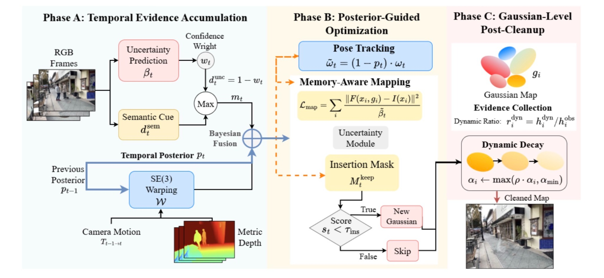

Project · Perception
TEG-SLAM
Temporal evidence and memory-aware pose estimation in a 3D Gaussian SLAM pipeline.

Project overview
Work on TEG-SLAM focuses on extending Wild-GS SLAM with temporal information to improve camera trajectory estimation and scene reconstruction. This 3D Gaussian SLAM project includes a memory-aware pose-estimation module that modifies Lie-group state updates and integrates temporal features within the optimization pipeline.
Rather than processing each observation independently, the pipeline incorporates information across successive frames into tracking and mapping. Temporal evidence supports pose estimation and helps maintain a more consistent Gaussian representation of the scene.
The project results reported in the resume include an 18% reduction in absolute trajectory error (ATE) and 2–5% improvements in PSNR and SSIM over the baseline.